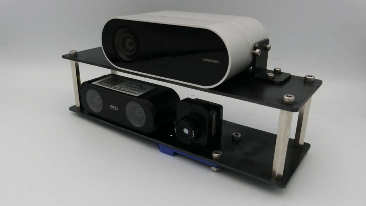
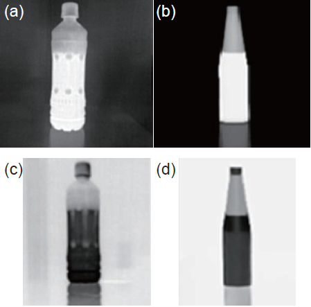
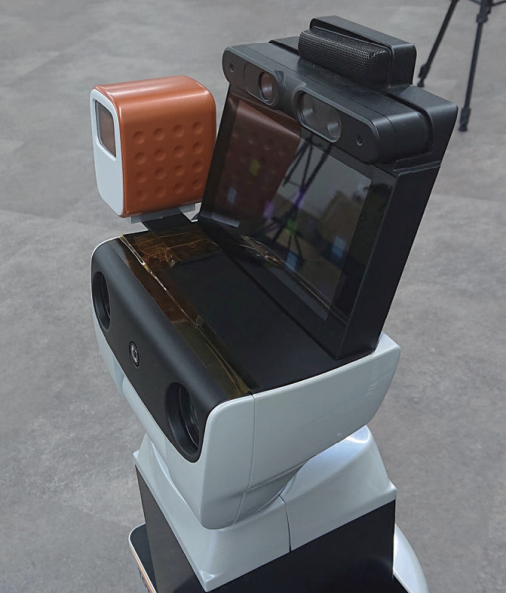
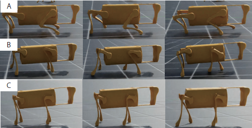

可視・長波長赤外ステレオ画像による三次元環境認識
現在、人や物の移動を支援する自律移動ロボットの研究開発が盛んに進められており、安全な移動のためには環境認識の精度向上が重要です。なかでも、生活空間に多数存在するガラスなどの透明物は、従来の可視光から近赤外光までを利用したカメラやデプスカメラでは確実に検出できないことが課題となっていました。また、我々がこれまでに研究してきた可視光と長波長赤外（LWIR）を同じ視点から撮影した同軸画像を利用したガラスの存在推定では、距離は推定できていませんでした。そこで本研究では、可視画像とLWIR画像を別の視点からステレオ撮影し、透明物であっても三次元位置を推定することのできる、可視・LWIRステレオ画像の認識方法を確立します。本研究はJSPS科研費JP23K26070の助成を受けて、2023年度から2025年度までの期間実施しています。

生活空間で活動するロボットにとって、透明物の認識と距離の推定は重要なタスクです。本研究では、可視カメラと長波長赤外（LWIR）カメラを並置したステレオカメラを設計、試作しました。温度変化機能を有するキャリブレーションボードを使用して、波長の異なるカメラ同士の相対位置と姿勢を算出し、この結果を利用して、LWIRカメラ視点のデプス情報を取得しました。さらに、透明物体のデプスアノテーションの方法として、同形状の不透明物体に置き換えてデータを取得する方法の精度を検証しました。
成果公開
- 〇吉田侑矢, 髙畑智之, “透透明物のある環境における3次元LiDARを用いた自己位置推定の正確性評価,” 第44回日本ロボット学会学術講演会, 金沢, 1–4 September, 2026.（発表予定）
- 小椋健太, 〇髙畑智之, “透明物体認識のための可視・長波長赤外ステレオカメラ,” 第44回日本ロボット学会学術講演会, 金沢, 1–4 September, 2026.（発表予定）
- 〇小椋健太, 髙畑智之, “透明部分を含む物体のデプスアノテーション法,” 第43回日本ロボット学会学術講演会, 2I1-02, 東京, 2–5 September, 2025. J-GLOBAL
- 〇髙畑智之, 兒玉創, 小椋健太, “可視・長波長赤外同軸カメラとデプスカメラのキャリブレーション,” 第42回日本ロボット学会学術講演会, 1D1-05, 大阪, 3–6 September, 2024. J-GLOBAL
- 〇小椋健太, 髙畑智之, “可視・長波長赤外同軸カメラの光学窓による赤外反射を考慮した筐体設計,” ロボティクス・メカトロニクス講演会2024, 1P2-S02, 宇都宮, 29 March–1 June, 2024. J-STAGE

可視・長波長赤外（LWIR）ステレオカメラの認識器の学習のために、可視、LWIR、デプス等の多種画像からなるデータセットの作成を目指しています。本研究ではLWIR画像の合成に用いる三次元モデルの記述方法を示します。
成果公開

上述のカメラや画像認識を車輪型移動ロボットに搭載して実証実験するために、トヨタ自動車のHSR (Human Support Robot)との連携についての研究に取り組んでいます。
成果公開
- 〇タンルイ, 髙畑智之, “自然な指差し物体指示のための腕の動作計測,” 第44回日本ロボット学会学術講演会, 金沢, 1–4 September, 2026.（発表予定）
- 〇菅田征克, 髙畑智之, “指向性バウンディングボックスとデプス情報を用いた物体の上下関係の推定,” 第43回日本ロボット学会学術講演会, 1I3-01, 東京, 2–5 September, 2025. J-GLOBAL
- 〇髙畑智之, 黒瀬優介, 原田達也, “可視・長波長赤外同軸カメラを利用した飲料温度の判別と把持動作,” 第41回日本ロボット学会学術講演会, 1J3-04, 仙台, 11–14 September, 2023. J-GLOBAL

上述のカメラや画像認識を脚型移動ロボットに搭載して実証実験するために、移動ロボットやその応用に関する研究に取り組んでいます。
成果公開
- 〇矢島哲太, 髙畑智之, “深層強化学習を用いた模倣対象の異なる四脚歩行ロボットの歩行性能比較,” 第44回日本ロボット学会学術講演会, 金沢, 1–4 September, 2026.（発表予定）
- 〇矢島哲太, 髙畑智之, “深層強化学習を用いた脚長比率の異なる四脚歩行ロボットの歩行性能比較,” 第43回日本ロボット学会学術講演会, 2E2-01, 東京, 2–5 September, 2025. J-GLOBAL
- 〇矢島哲太, 髙畑智之, “深層強化学習を用いた関節配置の異なる四脚歩行ロボットの歩行性能比較,” ロボティクス・メカトロニクス講演会2025, 1A1-Q02, 山形, 4–7 June, 2025. J-STAGE
- 〇矢島哲太, 髙畑智之, “深層強化学習を用いた模倣対象の異なる四脚歩行ロボットの歩行性能比較,” 第44回日本ロボット学会学術講演会, 1F1-01, 金沢, 1–4 September, 2026.
- 〇吉田侑矢, 髙畑智之, “透透明物のある環境における3次元LiDARを用いた自己位置推定の正確性評価,” 第44回日本ロボット学会学術講演会, 2D1-01, 金沢, 1–4 September, 2026.
- 小椋健太, 〇髙畑智之, “透明物体認識のための可視・長波長赤外ステレオカメラ,” 第44回日本ロボット学会学術講演会, 2D1-02, 金沢, 1–4 September, 2026.
- 〇タンルイ, 髙畑智之, “自然な指差し物体指示のための腕の動作計測,” 第44回日本ロボット学会学術講演会, 2D2-05, 金沢, 1–4 September, 2026.
- 〇小椋健太, 髙畑智之, “透明部分を含む物体のデプスアノテーション法,” 第43回日本ロボット学会学術講演会, 2I1-02, 東京, 2–5 September, 2025. J-GLOBAL
- 〇矢島哲太, 髙畑智之, “深層強化学習を用いた脚長比率の異なる四脚歩行ロボットの歩行性能比較,” 第43回日本ロボット学会学術講演会, 2E2-01, 東京, 2–5 September, 2025. J-GLOBAL
- 浦野太一, 〇髙畑智之, “可視・長波長赤外ステレオ画像データセットのための長波長赤外画像合成,” 第43回日本ロボット学会学術講演会, 1I3-02, 東京, 2–5 September, 2025. J-GLOBAL
- 〇菅田征克, 髙畑智之, “指向性バウンディングボックスとデプス情報を用いた物体の上下関係の推定,” 第43回日本ロボット学会学術講演会, 1I3-01, 東京, 2–5 September, 2025. J-GLOBAL
- 〇矢島哲太, 髙畑智之, “深層強化学習を用いた関節配置の異なる四脚歩行ロボットの歩行性能比較,” ロボティクス・メカトロニクス講演会2025, 1A1-Q02, 山形, 4–7 June, 2025. J-STAGE
- 〇髙畑智之, 兒玉創, 小椋健太, “可視・長波長赤外同軸カメラとデプスカメラのキャリブレーション,” 第42回日本ロボット学会学術講演会, 1D1-05, 大阪, 3–6 September, 2024. J-GLOBAL
- 〇小椋健太, 髙畑智之, “可視・長波長赤外同軸カメラの光学窓による赤外反射を考慮した筐体設計,” ロボティクス・メカトロニクス講演会2024, 1P2-S02, 宇都宮, 29 March–1 June, 2024. J-STAGE
- 〇髙畑智之, 黒瀬優介, 原田達也, “可視・長波長赤外同軸カメラを利用した飲料温度の判別と把持動作,” 第41回日本ロボット学会学術講演会, 1J3-04, 仙台, 11–14 September, 2023. J-GLOBAL
- 〇髙畑智之, “可視画像の認識結果を利用した可視・長波長赤外同軸画像の学習,” 第41回日本ロボット学会学術講演会, 3D3-07, 仙台, 11–14 September, 2023. J-GLOBAL